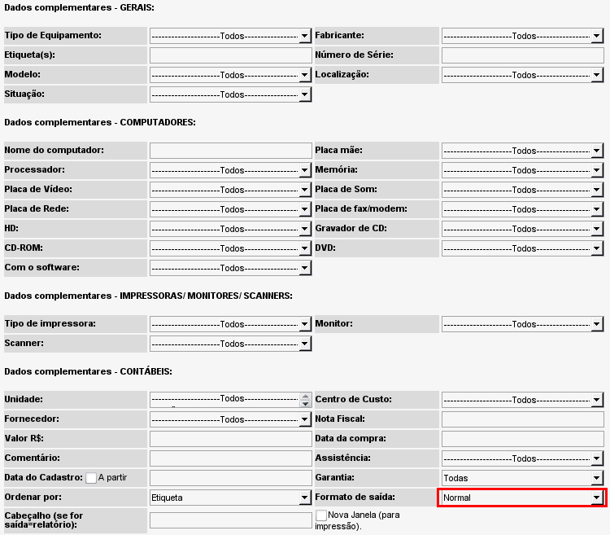

Consulta especial (Inventário -> Consultar -> Consulta especial)
A partir dessa tela é possível realizar pesquisas por equipamentos utilizando como filtro qualquer campo desejado ou combinação de diversos campos.

Tela de consulta detalhada - versão 2.0rc3
É possível realizar a consulta informando mais de um número de
etiqueta. Basta informar os números separando-os por vírgula.
E possível selecionar mais de uma
unidade utilizando a tecla CTRL.
O resultado da pesquisa vem formatado por padrão no formato demonstrado na página
visualizar equipamentos. No entanto, é possível selecionar outras formas de exibição no campo "
Formato de saída".
Atualmente (até a versão 2.0rc3) os demais formatos trazem as
logomarcas fixadas, no entanto não é difícil alterá-las. Para isso basta substituir os logos (arquivos de imagens) que estão no diretório de instalação do OcoMon, na pasta includes/logos por suas imagens, mantendo o mesmo nome e tamanho (preferencialmente).
Os formatos de saída possíveis (além do formato padrão):
Relatório 5 linhas: traz informações referentes à identificação do equipamento.
Relatório 1 linha: traz as mesmas informações do formato padrão e mais o número de série e nota fiscal do equipamento.
Mantenedora 1 linha: idem ao relatório 1 linha com mais a informação centro de custo.
Texto com delimitador: traz todas as informações de configuração do equipamento em forma de texto separado por vírgula. Esse formato é útil para colá-los em uma planilha por exemplo.
Configuração: traz toda a configuração do(s) equipamento(s).
Termo de compromisso: esse formato traz um formulário de termo de compromisso, comum em empresas que possuem um controle mais rígido sobre quem é responsável sobre cada equipamento. Nesse caso o formulário deve ser impresso e assinado pelo responsável pelos equipamentos listados.
O texto exibido no formulário de compromisso é o modelo utilizado no
Unilasalle. O mesmo deve ser alterado de acordo com as políticas da sua organização. Para isso, é necessário alterar, no arquivo de idioma utilizado (ocomon/includes/languages/pt_BR.php), as seguintes entradas:
- TTL_CINFO
- TTL_TERM_COMP_HW
- TXT_TERM_COMP_HW
- TXT_TERM_COMP_1
- TTL_TERM_COMP_2
- TXT_TERM_COMP_3
Formulário de trânsito: esse formato traz um formulário específico para movimentações de equipamentos para fora da organização.
O texto exibido no formulário de trânsito é o modelo utilizado no
Unilasalle. O mesmo deve ser alterado de acordo com as políticas de sua organização. Para isso, é necessário alterar, no arquivo de idioma utilizado (ocomon/includes/languages/pt_BR.php), as seguintes entradas:
- TTL_CINFO
- TTL_FORM_TRANSIT_EQUIP_INFO
- TXT_FORM_TRANSIT_EQUIP_INFO
- TXT_FORM_TRANSIT_1